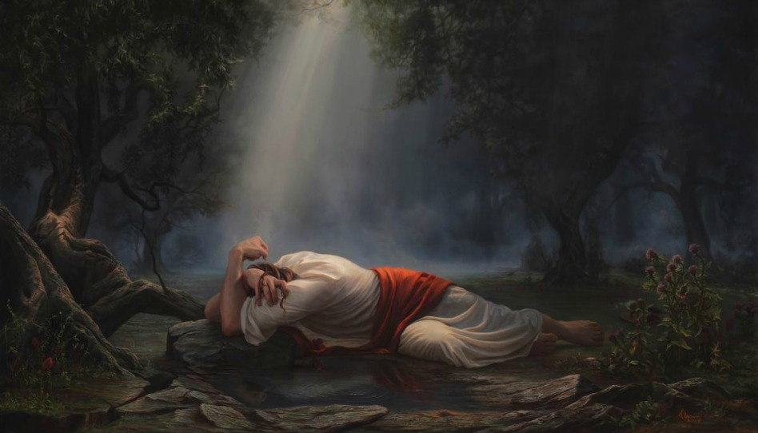
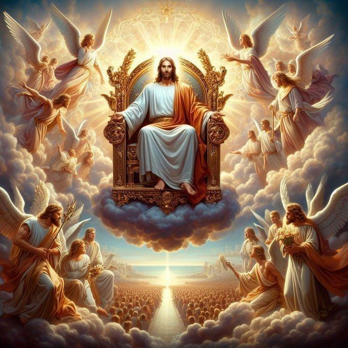

Por que Deus passa a imagem de um Deus não presente se foi Ele mesmo o Criador?
- O pecado foi a causa da separação de Deus, pois antes disso, Deus já havia julgado a maldade, assim como nos julgou.
Temos pouca culpa da separação, Deus ainda pode nos dar salvação.
Por que Deus criou o mal?
- Tudo o que sai da boca de Deus é verdadeiro, e se concretiza por meio de Sua perfeita justiça, segundo as obras alheias.
Como Deus criou o mundo?
- E Deus falou: "Não há ninguém maior que Deus". E tudo o que existe hoje naturalmente existe para testificar Sua palavra.
Assim, também todas as coisas existem. A palavra de Deus é infinita e atemporal: 1 dia é mil anos, e mil anos é um dia.
Assim como a grandeza do espaço é infinita, o minúsculo também é. A terra é mais antiga que a criação dos 7 dias,
sem forma, repleta de água desde a criação do universo.
Por que não há provas claras e diretas acerca da existência de Deus?
- O sobrenatural faz parte da consciência divina. Deveríamos esperar o tempo certo para aprender.
Não nos compete pedir ajuda ou poder para Sua compreensão. Deus se oculta dos que O procuram por meio de desvios.
Por que herdamos o pecado?
- Por causa da decisão da mulher em conhecer o mal, Deus se afastou dentre eles; por causa de ela ter dado o fruto para o homem comer,
ficou grávida, e o fruto foi passado para seus descendentes, que não conheciam a Deus. Isso colabora para que todos nós possamos ter a nossa
chance de conhecer novamente a Deus.

Certo dia em um antigo jardim uma moça passeava, de árvore em árvore, folha em folha, rio em rio. E sentia o cheiro
do lugar, a aparência velha e quebradiça das árvores e galhos de árvores. Ela sempre se perguntava:
-Por que este jardim é tão feio? E por que o dono não se importa de cuidar e vem aguar as pobres plantinhas que estão murchas?
Um pobre carpinteiro que andava por ali escutou, e lhe respondeu:
- Eu sei da história deste antigo jardim, ele era muito lindo, com árvores frutíferas e todo tipo de animal que possa imaginar.
O dono, todo fim de tarde, passeava pelo jardim e o regava com a água mais limpa e mais pura, para que pudessem viver e dar bons frutos.
Mas certo dia veio alguém que não era do jardim e plantou, na parte lateral, uma árvore que produz um fruto muito doce,
e só ele possuía estas sementes. As pessoas comeram do fruto desta árvore e chamaram tantas outras,
até todo o espaço do jardim ser ocupado e não restasse mais espaço para o dono.
O dono do jardim espera até hoje, até que não restem mais sementes e nem pessoas que ainda não provaram do fruto,
para que seu jardim possa ficar novamente vazio e para que ele chame seus filhos e parentes para reconstruí-lo.
A moça, comovida com a história que o carpinteiro lhe havia contado, perguntou seu nome, e ele respondeu:
- Meu nome é Paz, e sou príncipe de outras terras
- Se chama Paz? E é príncipe?
- Sim — respondeu o carpinteiro
- E desta árvore seca e sem vida farei com que todo o jardim ganhe vida novamente em três dias apenas.
A moça percebeu que ele falava em parábolas, então resolveu ir com ele e descobrir todo o segredo por trás desta história.
- Como entenderei o que me fala, se me fala em parábolas? — perguntou a moça.
- Não falo em parábolas, falo minha própria língua, que também é a daqui. Te mostrarei coisas sobre o jardim.
Mas meu espírito será como luz e te abrirá os olhos, revelando-lhe a verdade.
Assim, ele começou a revelar para a moça:
"Este jardim é onde você vive; as árvores dele: tronco e folhas são todas as pessoas que habitam nesta terra.
Os frutos são as atitudes tomadas segundo seus pensamentos e palavras, maus ou bondosos.
Cuidado com o que falam, pois suas palavras têm poderes para edificar ou levar à perdição."
A moça não entendia nada do que o carpinteiro falava, mas se o carpinteiro falasse na língua do jardim da moça,
ela o impediria de realizar o que estava disposto a fazer, que era entrar no jardim e sacrificar sua vida propositalmente.
O carpinteiro já dentro do jardim cortou um pedaço de uma árvore antiga, e com ela fez uma cruz. Chamou a moça e disse: faça o mesmo pois sou o maior exemplo. A árvore antiga
simbolizava o pecado e práticas que não agradam a Deus. O carpinteiro disse:
-você mulher que está vestida com folhas de figueiras, e produz figo verde e figo roxo adocicado
produza figos verdes para que mais pessoas tenham acesso a figos verdes, me ajude a carregar a cruz para fora do jardim e te darei novas vestes de Paz. Pois desta árvore velha que
injustamente foi removida deste jardim por mim levarei até meu pai que é justo e voltarei com minha árvore boa que produzem frutos da árvore da vida, pois atravéz da injustiça vocês terão misericordia
por mim.
Assim, a árvore da vida foi levada novamente ao jardim, e todos que experimentarem de seus frutos nunca mais terão fome ou sede e logo mais o Dono virá mesmo sem muitos ainda não entenderem
agora, quando todos decidirem em qual lado de qual árvore estarão plantando de suas sementes ele voltará.
"Alimente-se de sua palavra e não sentirá mais fome, beba do arrependimento que te foi dado como fruto da videira e siga seus passos de uma árvore simples, não seja orgulhoso e acredite que esta árvore simples te salvou de sua morte"

Deus é vida, por isso tudo o que Deus faz é para a vida e edifica. Um dos pilares para compreender quem é Deus é a Justiça, pois Deus é a justiça.
Seja justo a ponto de amar a justiça quando você mesmo for corrigido por ela. Se guarda a justiça, olhará para o mundo e encontrará ela,
verá que ela está presente em tudo, pois Deus possui justiça e criou tudo com ela. Verá que vivemos em tempos de aplicação da justiça e não em tempos de braços cruzados, para sim depois vivermos em tempos de paz,
e que nada é por acaso.
As dúvidas e problemas da humanidade a respeito da vida poderão ser respondidas, e não se queixará de mais nada.
Podemos enxergar a justiça como um meio-termo: a quantidade que aumenta é a que abaixa, a que se perde é a que se acha.
A justiça humana é limitada, ninguém tem o direito de julgar, pois ninguém nunca sabe de nada direito.
Quem tem o direito de julgar é quem sabe de todas as coisas e quem é justo e correto.
Da mesma forma que julgar, será julgado; com o juízo com que julgamos, seremos julgados.
Mais valioso que ganhar muito ouro e riqueza, ao ponto de ser a pessoa mais rica que já existiu, é ganhar de Deus conhecimento,
pois Deus nos dá seu conhecimento e sua sabedoria desde nosso início, quando todos mereciam afogar no pecado.
Deus nos dá o escape de graça, pois Ele tem misericórdia, que pode ultrapassar a justiça,
pois antes, para conhecer a verdade, era necessário encontrá-la por mérito.
No princípio, com Deus estava a vida. Todo ser vivo que estava com Deus tinha sua marca;
tudo o que faziam levava à vida eterna, levava à justiça, amor, misericórdia e tudo o que vinha de Deus e estava com Ele.
Deus, fonte de toda sabedoria e conhecimento que existe, se comunica com seres que não possuem nem tanta sabedoria nem tanto conhecimento,
mas dá para eles o discernimento correto da confiança, pois Deus também é a verdade. Assim é o céu.
Tudo o que sai da boca de Deus é a verdade, vida, e tudo o que não existia passa a existir,
e tudo o que antes não era possível passa a se tornar possível. Portanto, se a luta gera a morte,
não digamos que os anjos lutam, ou que acabam com a vida dos outros, mas sim que utilizam da armadura celestial.
A palavra de Deus é como uma espada afiada, a fé é como um escudo, a verdade é como um cinturão.
Se Deus fala: "Não há e nem haverá ninguém maior que mim", podemos guerrear seguindo este pilar.
"Pedi e receberei" é uma das maiores dádivas, pois podemos pedir qualquer coisa em oração e nos será concedido em justiça e em verdade.
Até podemos pedir com orgulho, assim como Satanás, mas a palavra de Deus não vai contra ela mesma,
e nossa resposta virá em forma de justiça.
Referencias: Gênesis 2:8-17, Isaías 9:6, Romanos 5:8, João 3:16, Gênesis 3:7,
João 15:1
Hebreus 1:3, Mateus 7:1-2, Gálatas 3:24, Mateus 10:34, saías 14:12-15,
Marcos 9:35, Mateus 26:26-28, Atos dos | Apóstolos 1:9-11, Gênesis 1:2, João 3:8
| @pedro_dsc14 |
"Muitas pessoas se perguntam qual é o sentido da vida.
Algumas acabam se afastando de Cristo e da Igreja por ainda não compreenderem o propósito que Deus tem para suas vidas.
Ao conhecermos o verdadeiro sentido da vida, segundo a Palavra de Deus, essa decisão se torna muito mais clara."